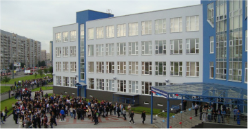
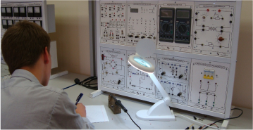
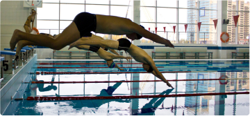

Колледж образован путем объединения 4 старейших учебных заведений среднего профессионального образования Санкт-Петербурга 23 января 2006 года Постановлением Правительства Санкт-Петербурга №38:
- ГОУ СПО «Колледжа радиоэлектронного приборостроения»
- ГОУ СПО «Санкт-Петербургского радиотехнического техникума»
- ГОУ СПО «Санкт-Петербургского механико-приборостроительного техникума»
- ГОУ СПО «Санкт-Петербургского техникума книжного бизнеса»
Учредителем колледжа является Санкт-Петербург в лице Комитета по управлению городским имуществом. Колледж находится в ведении - Комитета по науке и высшей школе Санкт-Петербурга.
Колледж ведет образование по 19 специальностям, затрагивающим многие отрасли современной промышленности и экономической деятельности города.
Особенностью образовательной деятельности в колледже является максимальная подготовка выпускников к ведению производства на предприятиях. Наибольшее внимание уделяется практической подготовке специалистов, которая обеспечивается мощнейшей материально-технической базой и оснащением лабораторий и мастерских колледжа.
С сентября 2010 года учебные занятия начали проводиться в новом здании колледжа. Здание построено согласно последним нормам и стандартам строительства учебных заведений. Общая площадь здания составляет около 20 000 квадратных метров.
В здании колледжа находится библиотека с читальным залом, большой спортивный зал и бассейн. На прилегающей территории имеется спортивная площадка с футбольным и волейбольным полем. Это обеспечивают здоровье и активную внеклассную деятельность студентов.
Колледж оснащен новыми компьютерными классами и учебными лабораториями и мастерскими с современным оборудованием.
Студенты занимаются в новых просторных и светлых кабинетах.Колледж образован путем объединения 4 старейших учебных заведений среднего профессионального образования Санкт-Петербурга 23 января 2006 года Постановлением Правительства Санкт-Петербурга №38:
- ГОУ СПО «Колледжа радиоэлектронного приборостроения»
- ГОУ СПО «Санкт-Петербургского радиотехнического техникума»
- ГОУ СПО «Санкт-Петербургского механико-приборостроительного техникума»
- ГОУ СПО «Санкт-Петербургского техникума книжного бизнеса»
Учредителем колледжа является Санкт-Петербург в лице Комитета по управлению городским имуществом. Колледж находится в ведении - Комитета по науке и высшей школе Санкт-Петербурга.
Колледж ведет образование по 19 специальностям, затрагивающим многие отрасли современной промышленности и экономической деятельности города.
Особенностью образовательной деятельности в колледже является максимальная подготовка выпускников к ведению производства на предприятиях. Наибольшее внимание уделяется практической подготовке специалистов, которая обеспечивается мощнейшей материально-технической базой и оснащением лабораторий и мастерских колледжа.
С сентября 2010 года учебные занятия начали проводиться в новом здании колледжа. Здание построено согласно последним нормам и стандартам строительства учебных заведений. Общая площадь здания составляет около 20 000 квадратных метров.
В здании колледжа находится библиотека с читальным залом, большой спортивный зал и бассейн. На прилегающей территории имеется спортивная площадка с футбольным и волейбольным полем. Это обеспечивают здоровье и активную внеклассную деятельность студентов.
Колледж оснащен новыми компьютерными классами и учебными лабораториями и мастерскими с современным оборудованием.
Студенты занимаются в новых просторных и светлых кабинетах. 